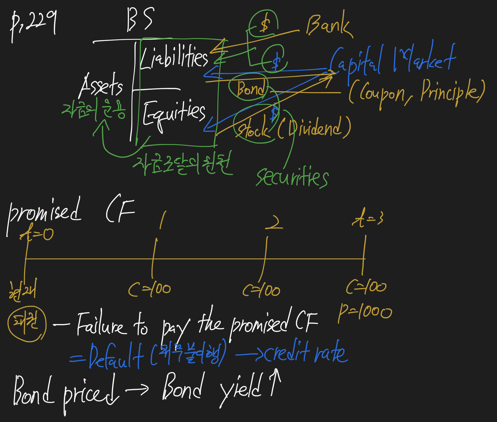

primary market
- 발행시장
- public offering(공모), private placement(사모)
- underwritten offering - 총액인수방식
- best efforts offering - 위탁모집방식
- grey market - 발행 전 미리 예약하는 시장
- secondary market - 유통시장
- primary dealer - 국채전문딜러
- shelf registration - 일괄신고제



42.e. Describe how cash flows of fixed-income securities are structured.


42.f. Describe contingency provisions affecting the timing and / or nature of cash flows of fixed-income securities and identify whether such provisions benefit the borrowers or the lender.


44.a. Calculate a bond’s price given a market discount rate.


44.b. Identify the relationships among a bond’s price, coupon rate, maturity, and market discount rate (yield-to-maturity).


44.d. Describe and calculate the flat price, accrued interest, and the full price of a bond.

44.e. Describe matrix pricing.

44.f. Calculate annual yield on a bond for varying compounding periods in a year.
44.g. Calculate and interpret yield measures for fixed-rate bonds and floating-rate notes.
- apple-to-apple measure
- 사과는 사과끼리 비교해야 한다.


44.h. Calculate and interpret yield measures for money market instruments.


LOS 42.f: Describe contingency provisions affecting the timing and / or nature of cash flows of fixed-income securities and identify whether such provisions benefit the borrower or the lender.


LOS 43.a: Describe classifications of global fixed-income markets.
LOS 43.b: Describe the use of interbank offered rates as reference rates in floating-rate debt.
LOS 43.c: Describe mechanisms available for issuing bonds in primary markets.


LOS 43.d: Describe secondary markets for bonds.
- secondary market은 유통시장
LOS 43.e: Describe securities issued by sovereign governments.
- 국채는 sovereign bond라고 부름
- 보통 free of default risk로 취급됨

LOS 43.f: Describe securities issued by non-sovereign governments, quasi-government entities, and supranational agencies.

43.g. Describe types of debt issued by corporations.

43.h. Describe structured financial instruments.


43.i. Describe short-term funding alternatives available to banks.
43.j. Describe agreements (repos) and the risks associated with them.

44.a. Calculate a bond’s price given a market discount rate.


44.b. Identify the relationships among a bond’s price, coupon rate, maturity, and market discount rate (yield-to-maturity).

LOS 43.g. Describe types of debt issued by corporations.

LOS 43.h: Describe structured finance instruments.


LOS 43.i: Describe short-term funding alternatives available to banks.


44.c. Define spot rates and calculate the price of a bond using spot rates.


44.d. Describe and calculate the flat price, accrued interest, and the full price of a bond.

44.e. Describe matrix pricing
- 시장유동성이 높은 채권의 정보를 이용하여 새로 발행되거나, 거래유동성이 낮은 채권가격을 Pricing
44.f. Calculate annual yield on a bond for varying compounding periods in a year.
44.g. Calculate and interpret yield measures for fixed-rate bonds and floating-rate notes.


44.h. Calculate and interpret yield measures for money market instruments.

44.i. Define and compare the spot curve, yield curve on coupon bonds, par curve, and forward curve.


44.j. Define forward rates and calculate spot rates from forward rates, forward rates from spot rates, and the price of a bond using forward rates.
- A forward rate is a borrowing/lending rate for a loan to be made at some future date.
- The idea here is that borrowing for three years at the 3-year spot rates, or borrowing for one-year periods in three successive years, should have the same cost.
44.k. Compare, calculate, and interpret yield spread measures.


46.a. Calculate and interpret the sources of return from investing in a fixed-rate bond.


46.b. Define, calculate, and interpret Macaulay, modified, and effective durations.


46.c. Explain why effective duration is the most appropriate measure of interest rate risk for bonds with embedded options.


46.e. Explain how a bond’s maturity, coupon, and yield level affects its interest rate risk.

46.f. Calculate the duration of a portfolio and explain the limitations of portfolio duration.

46.g. Calculate and interpret the money duration of a bond and price value of a basis point (PVBP).

46.h. Calculate and interpret approximately convexity and distinguish between approximate and effective convexity.


46.i. Estimate the percentage price change of a bond for a specified change in yield, given the bond’s approximate duration and convexity.

46.j. Describe how the term structure of yield volatility affects the interest rate risk of a bond.

46.k. Describe the relationships among a bond’s holding period return, its duration, and the investment horizon.

46.l. Explain how changes in credit spread and liquidity affect yield-to-maturity of a bond and how duration and convexity can be used to estimate the price effect of the changes.
- The benchmark yield curve’s interest rates have two components; the real rate of return and expected inflation.
- A bond’s spread to the benchmark curve also has two components, a premium for credit risk and a premium for lac of liquidity relative to the benchmark securities.
- Because we are treating the yields associated with each component as additive, a given increase or decrease in any of those components of yield will increase or decrease the bond’s YTM by the same amount.

47.a. Describe credit risk and credit-related risks affecting corporate bonds.
47.b. Describe default probability and loss severity as components of credit risk.


47.c. Describe seniority rankings of corporate debt and explain the potential violation of the priority of claims in a bankruptcy proceeding.
- Each category of debt from the same issuer is ranked according to a priority of claims in the event of a default.
47.d. Distinguish between corporate issuer credit rating and issue credit ratings and describe the rating agency practice of “notching.”

47.e. Explain risks in relying on ratings from credit rating agencies.
- Credit ratings are dynamic
- Rating agencies are not perfect
- Event risk is difficult to assess
- Credit ratings lag market pricing
- Market prices and credit spreads can change mush faster than credit ratings. Additionally, two bonds with the same rating can trade at different yields. Market prices reflects expected losses, while credit ratings only assess default risk.
47.f. Explain the four Cs (Capacity, Collateral, Covenants, and Character) of traditional credit analysis.
47.g. Calculate and interpret financial ratios used in credit analysis.
47.h. Evaluate the credit quality of a corporate bond issuer and a bond of that issuer, given key financial ratios of the issuer and the industry.

47.i. Describe factors that influence the level and volatility of yield spreads.
- yield spread = liquidity premium + credit spread
47.j. Explain special considerations when evaluating the credit of high yield, sovereign, and non-sovereign government debt issuers and issue.
45.a. Explain benefits of securitization for economics and financial markets.> 45.b. Describe securitization, including the parties involved in the process and the roles they play. 45.c. Describe typical structures of securitization, including credit tranching and time tranching.


45.d. Describe types and characteristics of residential mortgage loans that are typically securitized.
- A residential mortgage loan is a loan for which the collateral that underlies that loan is residential real estate.
- One key characteristic of a mortgage loan is its loan-to-value ratio (LTV), the percentage of the value of the collateral real estate that is loaned to the borrower. The lower the LTV, the higher the borrower’s equity in the property.
- RMBS - Residential MBS
- CMBS - Commercial MBS
45.e. Describe types and characteristics of residential mortgage-backed securities, including mortgage pass-through securities and collateralized mortgage obligations, and explain the cash flows and risks for each type.
45.f. Define prepayment risk and describe the prepayment risk of mortgage-backed securities.
- Any mortgage included in the pool is referred to as a securitized mortgage.
- The weighted average maturity (WAM) of the pool is equal to the weighted average of the final maturities of all the mortgages in the pool, weighted by each mortgage’s outstanding principal balance as a proportion of the total outstanding principal value of all the mortgages in the pool.
- The weighted average coupon (WAC) of the pool is the weighted average of the interest rates of all the mortgages in the pool.

45.e. Describe types and characteristics of residential mortgage-backed securities, including mortgage pass-through securities and collateralized mortgage obligations, and explain the cash flows and risks fro each type.
45.f. Define prepayment risk and describe the prepayment risk of mortgage-backed securities.


45.g. Describe characteristics and risks of commercial mortgage-backed securities.
- commercial MBS loans are repaid by real estate investors who, in turn, rely on tenants and customers to provide the cash flow to repay the mortgage loan.
- CMBS mortgages are structured as nonrecourse loans, meaning the lender can only look to the collateral as a means to repay a delinquent loan if the cash flows from the property are insufficient.
- For these reasons, the analysis of CMBS securities focuses on the credit risk of the property and not the credit risk of the borrower.
- DEbt-to-service-coverage ratio (DSC) = net operating income / debt service
- Loan-to-value ratio (LTV) = current mortgage amount / current appraised value
- At the end of the loan term, the loan will still have principal outstanding that needs to be paid; this amount is called a balloon payment.
- 만기 때 큰 금액이 상환되지 않으면 예상보다 만기를 늘려줘야 하는 extension risk, ballon risk가 존재한다.
45.h. Describe types and characteristics of non-mortgage asset-backed securities, including the cash flows and risks of each type.
- ABS backed by automobile loans and ABS backed by credit card receivables. These two have an important difference in that automobile loans are fully amortizing while credit card receivables are noamortizing.
45.i. Describe collateralized debt obligations, including their cash flows and risks.
- A CDO is structured security issued by an SPE for which the collateral is a pool of debt obligations.
- collateral manager가 채권 펀드처럼 운용하는 CDO를 market value CDO라고 함
- The term arbitrage CDO is used for CDOs structured to earn returns from the spread between funding costs and portfolio returns.
- CDO 발행 주체인 SPE가 중간에서 스프레드를 먹고 이자를 지급하는 구조를 arbitrage CDO라고 함